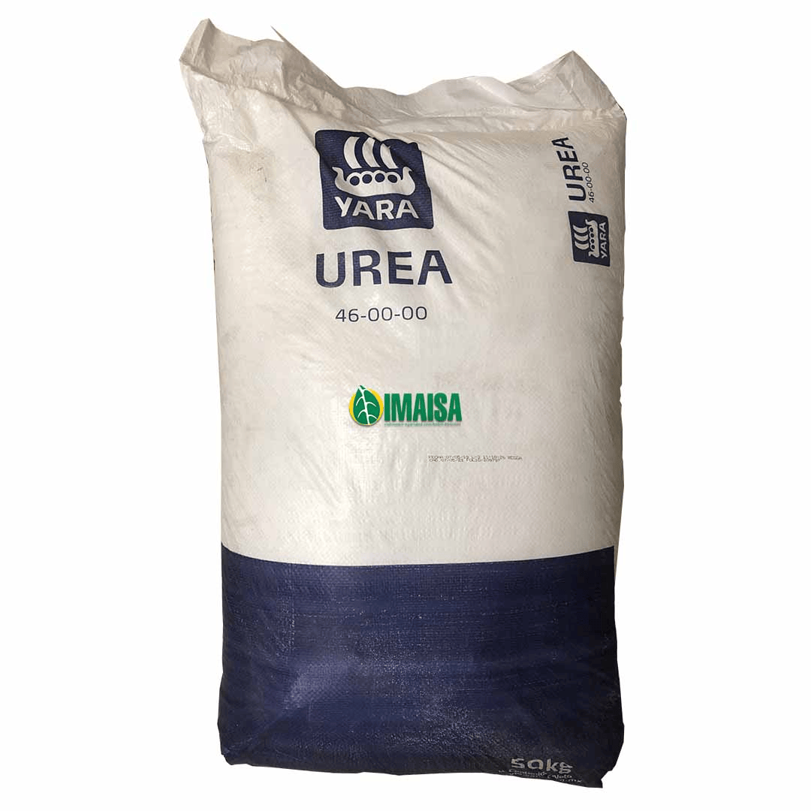
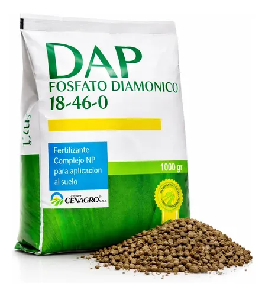
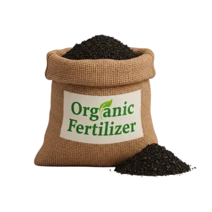

📅 Cargando…
Importante
La primera fertilización se realiza en etapa vegetativa temprana (V3–V4), para asegurar un buen desarrollo del maíz.
Selecciona el fertilizante que vas a aplicar
Elige una opción para ver la dosis y forma de aplicación recomendada.

Urea
Fuente de nitrógeno que favorece el crecimiento vegetativo del maíz.
›

DAP
Aporta fósforo y nitrógeno, esencial para el desarrollo inicial de las raíces.
›

Abonos orgánicos
Mejora la estructura del suelo y aporta nutrientes de forma natural y sostenible.
›
Recuerda
Aplica siempre según la dosis recomendada y las condiciones de tu cultivo.